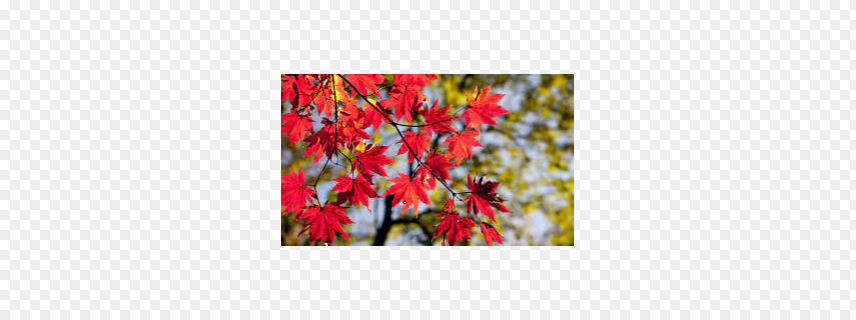
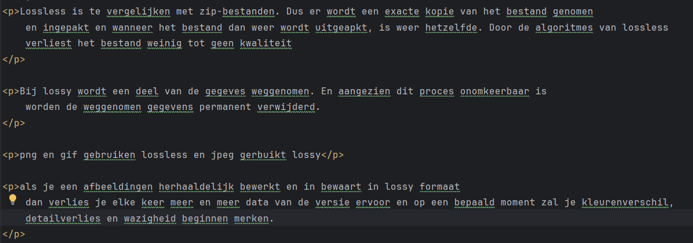
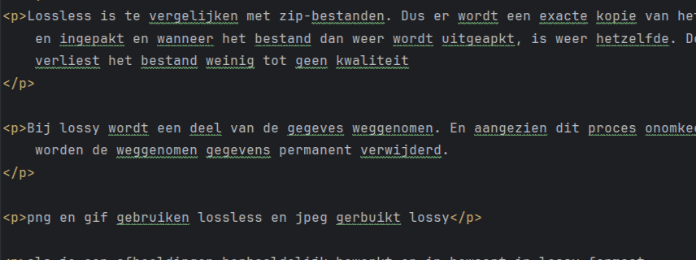
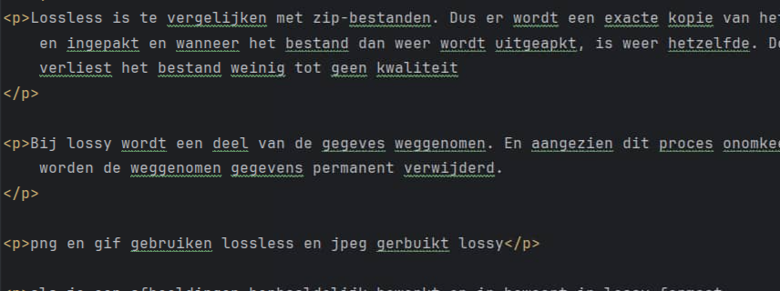
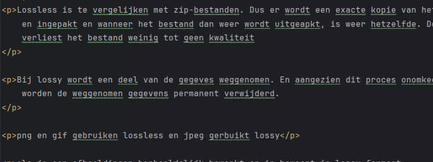

gekozen foto was

het bestand is normaal 14kb groot. bij kwaliteit 90 wordt het bestand kleiner dan 14kb maar er is 0% detailverlis. bij kwaliteit 70 wordt het bestand kleiner dan 13kb en is een detailverlies van 11%. bij 40 wordt het bestand kleiner dan 8kb en is 43% detailverlies.
kwaliteit 90
kwaliteit 70
kwaliteit 40
ander voorbeeld met tekst
kwaliteit 90 heeft geen verlies en bestand is evengroot
kwaliteit 70 heeft 21% verlies en bestand is 44kb in de plaats van 55kb, het wordt waziger
kwaliteit 40 heeft 51% verlies en bestand is 27kb in de plaats van 55kb, is dus nog waziger
